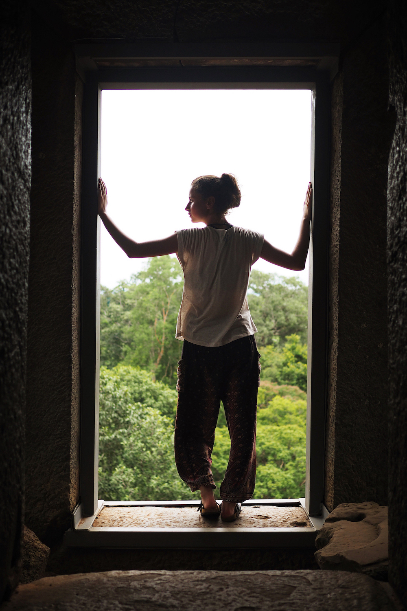
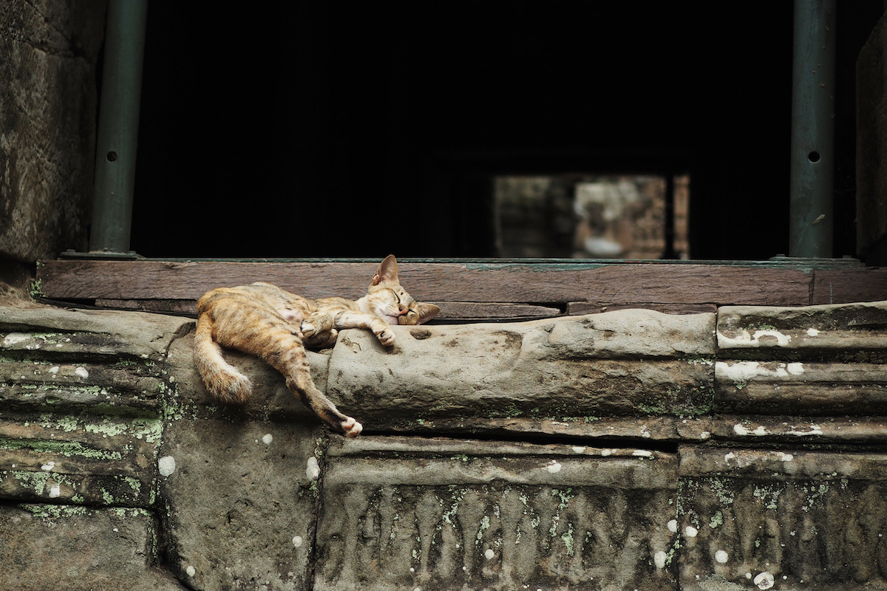
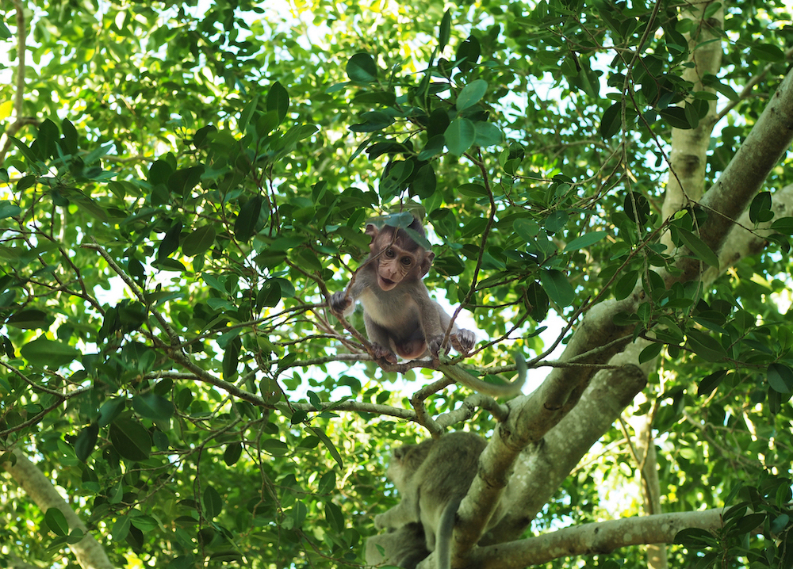
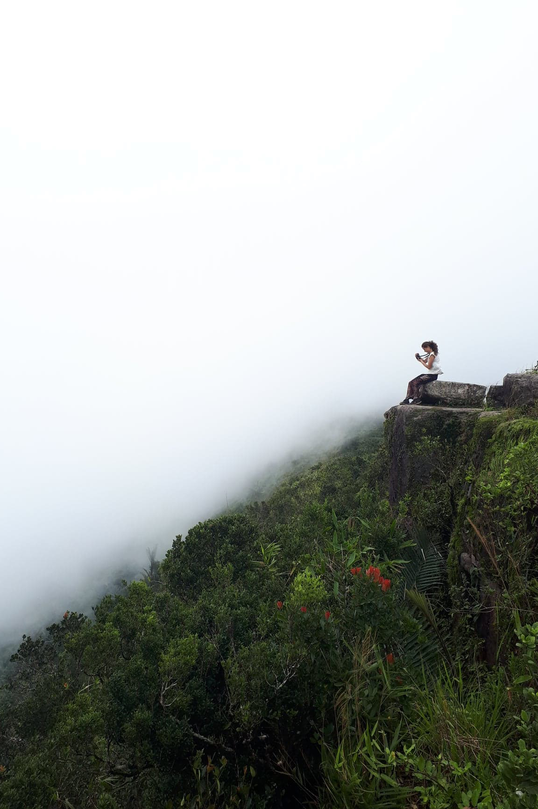

Cambodia
July 23 to August 6, 2018

Cambodia is renowned for the temples of Angkor and for good reasons. This once megacity flourished between the 9th and 15th centuries, and has since been reconstructed. Here are some of the must-see temples:
Angkor Wat
the best preserved temple in Angkor and one of the largest religious monuments in the world, making it a symbol of Cambodia
Ta Prohm
a temple intertwined with the jungle
Bayam
renowned for its 200 large smiling faces carved into the stone walls
East Barray
the only temple which allows visitors to watch the sunset from ontop of the monument
Banteay Kdei
the "Citadel of Chambers"
the best preserved temple in Angkor and one of the largest religious monuments in the world, making it a symbol of Cambodia
Ta Prohm
a temple intertwined with the jungle
Bayam
renowned for its 200 large smiling faces carved into the stone walls
East Barray
the only temple which allows visitors to watch the sunset from ontop of the monument
Banteay Kdei
the "Citadel of Chambers"

A full-day Tuk Tuk tour of the temples costs around 20USD, plus tip. Alternatively, bikes can be borrowed from Siem Reap for $3/day. If you opt for the latter, be prepared to bike at least 25km. Nina, my travelling partner, and I decided to adventure around West Barray on our own on our third day in Angkor. We biked under the blaring sun along a bumpy dirt path through the jungle on the city bikes as the occasional monkey would peer out from behind the leaves above. Eventually we made it to the mostly untouched temple ruins on the west side of Angkor.

Favourite Restaurants in Siem Reap:
Sister Srey Cafe
New Leaf Eatery
The Red Piano
a beautiful tourist-oriented restaurant serving delicious lok lak cooked in oyster sauce with egg, vegetables and rice
New Leaf Eatery
The Red Piano
a beautiful tourist-oriented restaurant serving delicious lok lak cooked in oyster sauce with egg, vegetables and rice

Victory Gate

Kampot
This town lays peacefully by the riverside, offering a variety of cute cafés, rustic hostels and floating bars. High Tide Kampot is a must-visit hippie hostel slash bar along the water.
While in Kampot, be sure to borrow a scooter and drive up Bokar mountain along the winding road. The King's now abandoned residence sits covered in graffiti at the top, and not long from the cement home is an eerie Catholic church filled with nothing but mist. Nina and I followed a footpath behind the abandoned church to a cliff overlooking a jungle. We watched as the fog rolled towards us, and just before the downpour hit, we became engulfed in clouds and the howls of monkeys emerging from the void below. Just after the church lies Popokvil waterfall.
While in Kampot, be sure to borrow a scooter and drive up Bokar mountain along the winding road. The King's now abandoned residence sits covered in graffiti at the top, and not long from the cement home is an eerie Catholic church filled with nothing but mist. Nina and I followed a footpath behind the abandoned church to a cliff overlooking a jungle. We watched as the fog rolled towards us, and just before the downpour hit, we became engulfed in clouds and the howls of monkeys emerging from the void below. Just after the church lies Popokvil waterfall.

Photo credit to Nina